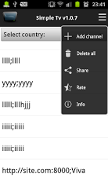

SimpleTV 快问快答：免费看全球直播的电视盒子
SimpleTV 是一款零配置、无广告的全球免费直播 Android 应用，本文整理了关于它的安装、缓冲、黑屏、流量消耗等高频问题的直接回答。
整理一篇关于 SimpleTV 的快问快答——这款 Android 上的免费直播应用，界面朴素到几乎像个玩具，但频道数量和覆盖范围却实打实惊人。如果你在 Google Play 或SimpleTV官网见过它的图标却没敢下手，或者装了之后遇到缓冲、黑屏之类的小问题，下面这些问答应该能帮你把最常见的疑惑一次搞清楚。
SimpleTV 到底是什么？跟别家直播 App 有啥不一样？
SimpleTV 是一款由开发者 idevel 维护的 Android 直播聚合应用，核心差异点有三个：一是零配置，装完打开直接进频道列表，不需要登录、不需要填源地址、不需要任何设置；二是完全免费且无广告，开发者没有内置任何商业变现手段；三是覆盖全球范围的免费公开直播源——从各个国家的地面电视到卫星频道都有收录。它不是国内那种聚合了各省卫视的机顶盒方案，而是主打国际频道的一个轻量播放器容器。应用体积只有 5 兆多，对 Android 版本的要求低到 Android 1.6 就能跑，这意味着绝大多数 2010 年后的设备都能装。

谁适合装它？
三类人：第一是想在手机上偶尔看看新闻联播之外的国际频道、又不想专门买 IPTV 订阅的人；第二是手里有闲置的老 Android 设备（比如旧手机、平板）想改造成迷你电视盒子的人；第三是对电视直播有特殊需求——比如学外语的人想听听外文台、或者有些国家的频道只能通过公开流访问的人。如果你只看国内卫视，那国内的聚合 App 可能体验更好，SimpleTV 的频道源里中文频道比例不高。
怎么装？Google Play 和 APK 两种方式有什么讲究？
两种方式都行，Google Play 是推荐路径——搜"Simple Tv"就能找到，确认开发者是 idevel 就行。APK 侧载适合国内行货手机或者 Google Play 访问不了的设备，文件管理器里点 APK 直接装，但 Android 8.0 以上需要先在系统设置里给文件管理器授权"允许安装未知应用"。装完不需要联网验证、不需要登录账号，桌面上图标出来就可以点进去用。卸载也很干净——设置里点卸载或者桌面长按拖到卸载区就行，应用本身不保留任何用户数据。唯一值得注意的是 APK 文件尽量从SimpleTV下载或者 soft112、APKPure 这类正规渠道获取，从论坛帖子或者不明来源下载的还是建议扫一遍安全中心。
打开一个频道后一直在转圈，该等多久才算正常？
正常网络环境下，3–10 秒内开始播出是大多数频道的情况。1–3 秒那是源响应特别好，不用特别期待；10–15 秒偏慢但还在合理范围。超过 15 秒还在转就要排查了——先再等 5 秒，有时候只是源服务器在地球另一端或者高峰拥堵；如果还是不行就换个频道试，同一个国家的其他频道也慢的话大概率是你的网络问题；切换 WiFi 和移动数据有时候意外能解决；还不行就重启应用彻底退出再打开，清掉可能卡死的连接。反复缓冲、看几秒卡几秒的情况通常是带宽不够或者信号不稳定，不是源坏了——移动数据弱信号区、WiFi 距离太远、USB 共享网络延迟都可能导致这种现象，更详细的排查可以去SimpleTV文档查。
点开黑屏或者弹出 "the program is not available" 是应用坏了吗？
大概率不是。这个提示本身就是开发者在应用介绍里专门说明的——很多国家的地面免费频道不是 24 小时直播的，只在特定时段播出，其他时段停机或者只播测试画面。凌晨两三点点进去黑屏完全正常，换个时段再来就行。还有两种常见情况：源过期失效了——idevel 从论坛收集的直播源 URL 会慢慢过期，某个源可能被站长关了、换了地址或者加了防盗链；或者频道源有地区性限制，只允许特定国家的 IP 访问。第三种情况可以合法地用 VPN 切到对应国家节点验证一下，但前两种 SimpleTV 本身没有自动更新源、也没有手动替换源列表的功能——失效了就只能换其他频道或者等开发者发布新版本。
用移动数据看直播一个小时要花多少流量？
SimpleTV 没有内置流量统计，也不支持手动调节画质，但根据公开流的大致码率范围可以估算：标清（360p 左右）约 400–800 Kbps，一小时大概 200–360 MB；准高清（480p/540p）约 800–1500 Kbps，一小时 360–675 MB；高清 720p 以上的免费流很罕见，码率 1500–3000 Kbps 的话一小时 675 MB 到 1.35 GB。如果你的移动数据套餐每月 30 GB，偶尔看一两次完全没问题。但有几个容易忽略的耗流量场景要注意：后台没退干净（按返回键可能只是回到后台，播放器还在跑）、WiFi 信号差时自动切到移动数据、晚上开着看睡着忘了关——这一晚上可能耗掉几个 GB。想精确知道用了多少，系统设置里的"网络和互联网 → 流量使用情况"能看到各应用分别用了多少。
SimpleTV 跟国内的电视直播 App 比有哪些硬伤？
说实话有几个。第一，源是静态打包的，不会自动更新——旧源慢慢过期失效了，用户也不能自己加新源或换源，只能等开发者发布新版本。第二，没有任何个性化功能——没有收藏、没有历史记录、没有画质调节、没有倍速播放，就是个纯播放器容器。第三，频道搜索能力很弱，全球几百上千个频道没有分类筛选，找特定频道只能靠翻列表。第四，画质上限受制于免费公开流，720p 以上的频道很少见，跟付费 IPTV 或 Netflix 订阅的画质差距明显。但反过来说，没有广告、没有登录、没有订阅、体积小、启动快，这些也是它吸引人的地方。
值不值得长期装在手机上？
值得当作备胎装上——体积 5 兆多不占空间，没广告不弹窗想起来就点开看看，不想用了一键卸载干净。日常主要用来看特定的国际新闻台或者外语频道挺顺手，但如果它成了你唯一的直播方案，那遇到的缓冲、黑屏、源失效这些小问题可能会让你恼火。它定位就是一个轻量补充，而不是主力电视盒子。要是想核实 APK 文件的来源可靠性，镜像资料在 GitHub、Gitee、GitCode 都能找到，随便挑你习惯的仓库查就行。